|
Intercooler System Improvements |
|
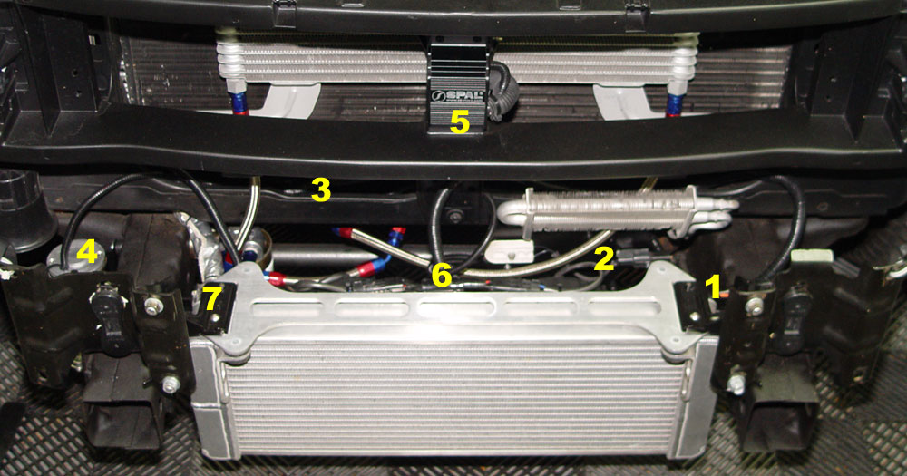 The stock intercooler system works great on the street, but increased boost or sustained high-speed driving can tax the system. This is my setup -- pretty much all of the intercooler tech I could throw at it. The heat exchanger is an Afco double-pass, with the Afco shrouded fans. Not shown is the Fluidyne (soon to be JLP) high capacity reservoir. The setup is as follows: The power is triggered from the stock intercooler pump harness (1). Power for the Jabsco pump (4) is supplied by a relay mounted behind a plate that I fabbed to hold the fuel pump resistor (2). The main harness (3) supplying power for the pump and fans runs from the main power connection in the engine compartment, and sits just in front of the bottom edge of the radiator. The SPAL fan controller (5) feeds the fans (6). The temperature sender for the SPAL is located in a welded bung in the HE end tank (7). Details of the fan control circuit are here. |
||||||||||||||||||||||||||||||||||||||||||||||||||
|
From Silver-Y2K-SVT on F150 Online: I have a Cyberdyne digital gauge on the IC (with the sender right at the outlet of the IC radiator) and have made a lot of observations over the last year. The Cyberdyne unit reads from 70 degrees F up to way-too-high-for-the-IC degrees F. Here is what I know... At steady state (off the boost, long highway cruise, not tailgating), the IC runs about 10-12 degrees F over ambient during the day, 6-10 degrees F over ambient at night (pavement heating effect). If you hammer the throttle open on a good 0-120 MPH run, you will put 6-10 degrees F into the entire fluid inventory of the IC circuit. Each degree of IC temperature will cost you around 1 RWHP, and around 0.01 seconds in the quarter. Thus, the 10-odd degrees you put into the circuit will cost you around 10 RWHP and about a tenth. Those of you who like to hot-lap at the 'strip, take note. The IC circuit takes an eternity to reject accumulated heat. At 60 MPH, off the boost, and not tailgating, it takes well over a mile to reject 1 degree F out of the IC circuit. When you drive a while (think - the trip the the 'strip), get the motor up to operating temperature, then shut the truck off, all of the fluid in the IC core (which is a considerable portion of the total inventory), which is trapped within the general confines of the engine, starts soaking up heat. Lots of it. If you drive to the 'strip on an 80 degree day (daylight hours) and stay off the boost, your IC circuit will be at around 90 degrees F (see above). If you shut the truck down and wait for the engine to cool for an hour or so, the IC fluid will be around 110-120 degrees F once you restart and mix up the scorching hot fluid from the core and relatively cool fluid in the radiator and reservoir. This will cost you as much as 30 or 40 rwHP and 3-4 tenths, relative to the IC fluid at ambient. Accordingly, it pays dividends to wire up a switch to allow you to circulate the IC fluid with the truck off. Do a search, but beware. There are a lot of dead-wrong ways to wire this and really only one right way. Props to our man Noel for being the first to get it right, although his description is a bit cryptic. It's actually a bizznitch of a job to really do it up right, but it's worth it. If you nose right up to the azz-end of a semi on the highway, you will pick up 2-4 degrees F in the IC circuit from reduced airflow over the IC radiator. In summary, putting a gauge on the IC circuit returns a lot of data and affords some advantages if you choose to manage the IC temperature, but will, on the other hand, drive you insane. Certifiably so. By the way, I also have a Cyberdyne at the inlet side of the MAF, but that's for another day. Suffice to say that if you get stuck in traffic on a hot day, you might see intake temperatures 60 degrees over ambient (60 rwHP or so, plus the IC effect). It is obvious that some real improvements can be had by increasing the rate of heat rejection from the front exchanger or adding a secondary cooler. |
||||||||||||||||||||||||||||||||||||||||||||||||||
|
larger heat exchanger: |
||||||||||||||||||||||||||||||||||||||||||||||||||
|
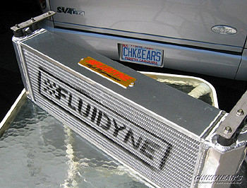Fluidyne makes a replacement heat exchanger (available from Chikenears). It is approximately two times larger than the stock exchanger.
|
||||||||||||||||||||||||||||||||||||||||||||||||||
|
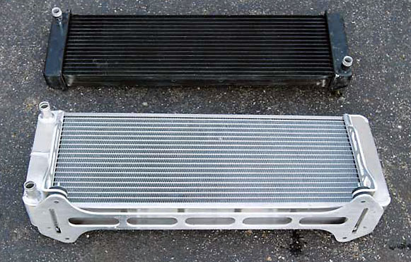Afco's heat exchanger is also about twice as large as the stock unit.
Lightning Force Performance sells an imported HE dimensionally identical to the original Afco, but with 16 fins per inch for maximum effective cooling per unit of space.
Velocity Turbo Systems also sells a larger HE. |
||||||||||||||||||||||||||||||||||||||||||||||||||
|
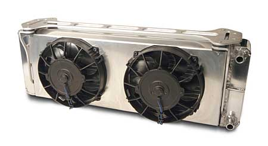Afco's newer "Pro Series" is a two-pass exchanger, with an optional integrated shrouded fan unit. Basically, they took the original design, inserted a divide in one of the end tanks, and re-re-routed the outlet to the other side. This forces the fluid to travel the length of the cooler twice, making a u-turn after it hits the left end tank. This is the one that I chose. I would have consider the VTS HE, but it did not exist at the time. |
||||||||||||||||||||||||||||||||||||||||||||||||||
|
But a dual-pass is nowhere near twice as effective as a single-pass. A HE removes a percentage of heat. As a result, a HE works best when there is a large gradient between the fluid to be cooled and ambient. The fluid is cooled much less in the second pass than in the first. So I would expect the new design to be more effective, but only marginally so. |
||||||||||||||||||||||||||||||||||||||||||||||||||
|
Dimensions (approximate and unscientific):
Notes:
|
||||||||||||||||||||||||||||||||||||||||||||||||||
|
JDM reported the following on an older version of the Fluidyne:
Even though it has proven its effectiveness in the 1/4 mile, our heat
exchanger really shines on the street. On an 80 degree day your
Lightning's air charge temp cruising down the street is an average of 95
degrees. With an 8 lb. pulley combo if you do a wide open throttle at the
top of 3rd gear (5,300 RPMs) you will see an air charge temp of 165
degrees. Now with the JDM heat exchanger you will see your air charge drop
down to 105 degrees. That is a 60 degree drop in temperature! The rule of thumb often used is 1-1.5% horsepower for every 10� reduction in intake temps. If this rule holds true, the 60� drop advertised above would provide a 24-36 rwHP gain (or rather, prevent a 24-36 rwHP loss) on a 400 rwHP engine.
Noelvm reported the following on the older Fluidyne:
With the stock radiator, my fluid temp would go up 10 degrees in one pass down the [1/8 mi.] track. . . . With the new JDM unit the fluid temp only went up five degrees in a run. |
||||||||||||||||||||||||||||||||||||||||||||||||||
| Note that these gains may not be apparent on a dyno run on a cold engine. The larger heat exchanger would likely provide gains only in sustained or intermittent boost operation lasting long enough to cause a substantial rise in intercooler fluid temps. But in the real world, this exchanger may provide substantial gains and increase reliability at the same time. And some users have reported test data suggesting that the reductions in intake air claimed by JDM are inaccurate. | ||||||||||||||||||||||||||||||||||||||||||||||||||
|
To solve the ride height clearance issues, Mike Dunn (Madferraristi) came up with the idea of just stacking two stock exchangers back-to-back. Very clever.
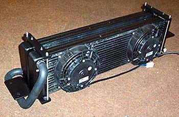 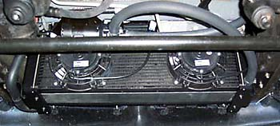 |
||||||||||||||||||||||||||||||||||||||||||||||||||
|
high output pump: |
||||||||||||||||||||||||||||||||||||||||||||||||||
|
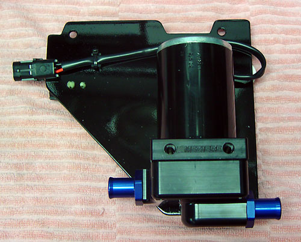Meziere
makes a pump that produces 20 gallons per minute versus the stock 6 GPM.
You will need the pump (part # WP136S) and two Mezeire -12AN o-ring to 3/4" hose fittings (part # WP12034B). Installation notes are here. |
||||||||||||||||||||||||||||||||||||||||||||||||||
|
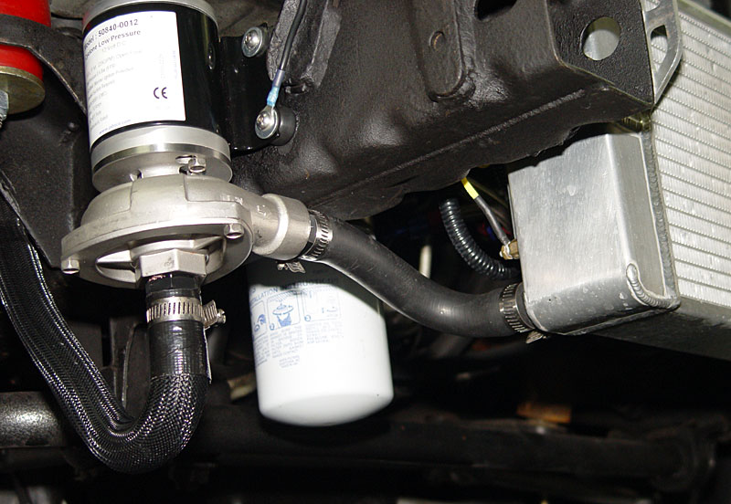I
recently replaced the Meziere with a Jabsco "Cyclone" bilge pump
(#50830), that puts out a whopping 30 GPM. Very nice pump.
Stainless head and impeller, field replaceable seals and impeller.
I also like the very short fluid path.
This pump turns the reservoir into a froth, while running completely silently. it is attached to the frame with 10-24 rivnuts. Since this photo was taken, I changed to a JLP reservoir, and was able to use a 1" hose from the reservoir to the Jabsco (a 3/4" hose is shown).
|
||||||||||||||||||||||||||||||||||||||||||||||||||
| 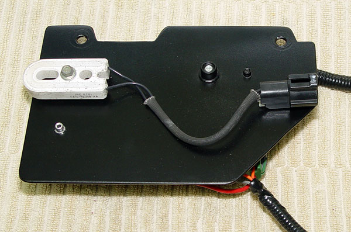When I swapped out the Mezeire, I cut down the mounting plate. This is what it looks like now. | ||||||||||||||||||||||||||||||||||||||||||||||||||
|
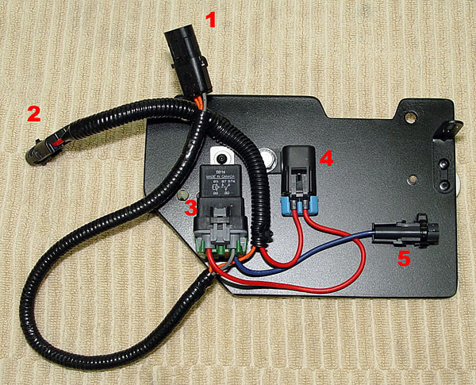The
trigger power is a female two-pin Weatherpak (1) that plugs into the stock
intercooler pump circuit. One orange (hot) wire goes to the
ignition on of the SPAL fan controller, and the other trips the
intercooler pump relay (3). The gray wire is ground.
The SPAL power plug is a male two-pin Weatherpak (2) that contains the trigger wire running to the SPAL, and the pump power coming from the main power terminal in the engine compartment. Power to the pump is a single-pin Weatherpack (5), supplied by the power from connector 2, running through a weatherproof fuse (4), and then to the relay. The pump is grounded at the frame. |
||||||||||||||||||||||||||||||||||||||||||||||||||
|
high capacity reservoir: |
||||||||||||||||||||||||||||||||||||||||||||||||||
| Increasing the amount of intercooler fluid will add stability to the fluid temperature, which in turn will add stability to intake air temps. Under sustained boost, though, the temperature will eventually increase to the same level no matter how large the reservoir. The reservoir just damps temperature swings (in both directions, as it will take longer for the fluid to cool down as well). | ||||||||||||||||||||||||||||||||||||||||||||||||||
| 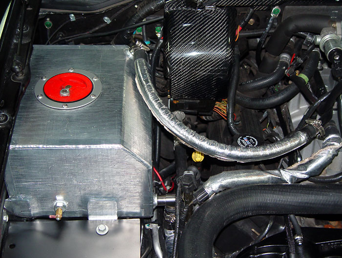This Fluidyne reservoir was available from Razor's Edge, but I am told that I bought the last one. Installation notes are here. | ||||||||||||||||||||||||||||||||||||||||||||||||||
|
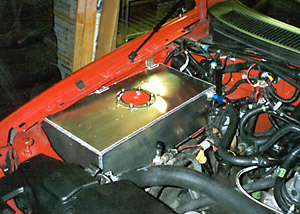Joe Messana ("RTKILLA" from F150 Online) fabbed up this great intercooler reservoir from a racing fuel cell. Canton Racing Products and Johnny Lightning Performance now sell replacement reservoirs. The Canton mounts in the same location as stock and looks to hold the same amount of fluid. The JLP reservoir mounts in place of the windshield washer reservoir. One version is available with a small section for the windshield washer fluid. |
||||||||||||||||||||||||||||||||||||||||||||||||||
|
fans: |
||||||||||||||||||||||||||||||||||||||||||||||||||
|
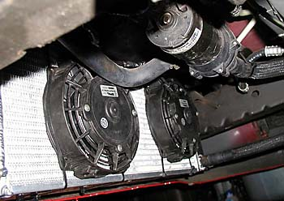Intercooler fluid temperature might be a problem in autocrossing or drag racing, where the fluid temperatures are subjected to extreme increases while the engine is under boost without an opportunity to shed the heat (getting right back in line for the next run). Some Lightning owners have installed intercooler fans to combat this potential problem. The 6.5" puller SPAL fans shown above Vinnie's JDM exchanger are available for about $65 each. |
||||||||||||||||||||||||||||||||||||||||||||||||||
|
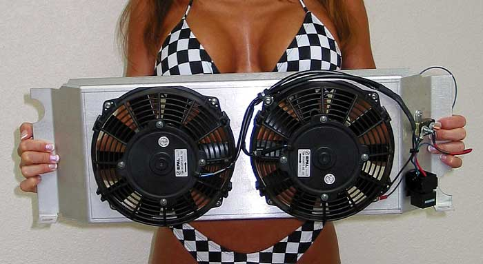Sport Truck Direct also sells a neat pre-fabbed and pre-wired
unit called the "Interchiller" ($330) from SVC Motorsports. The
InterChiller is pre-wired with two large SPAL 440 cfm fans. Just
look at the size of those . . . err . . . fans.
Sport Truck Direct states that the Interchiller will fit the Afco HE. This is incorrect. The lower part of the InterChiller has to be cut off and some sort of lower mounting arrangement fabbed up.
|
||||||||||||||||||||||||||||||||||||||||||||||||||
|
While its effectiveness in low-speed situations cannot be questioned, there were some concerns about whether the shroud would in fact hinder airflow at speeds, user tests have proven its effectiveness, even at highway speeds. From a post on F150 Online: "Well about that restriction. I did my own testing without the system installed. Cruising on the freeway for 25 miles at 80mph in drive (3rd gear) turning about 3600 rpm. Intake temp on the 2nd IAT sensor (the one in the intake manifold), I had a constant temp of 135 degrees. Then I put the InterChiller system on and did the same run with the fans off. Constant temp of 138 degrees. Then with the fans on, constant temp of 110 degrees. What do you think about your restriction now? Wouldn't you have the same issues with the engine radiator also. It has a shroud too, does it restrict the air flow? No. The fans will spin as the air rushes by them. The best part of this system is the shroud. Because it pulls the air through the whole intercooler, not just where the fans are mounted." |
||||||||||||||||||||||||||||||||||||||||||||||||||
| I can personally attest to the effectiveness of a shrouded fan. At idle with 87� ambient temperature, I had a steady 121-122� fluid temp while idling in my garage after a WOT blast. The temp held steady for about 10 minutes, even with an Afco HE, and a Jabsco pump with over five times the GPM flow of the stock pump. I cut the fans on. The temp dropped almost 7 degrees in 3 minutes -- about 1 degree every 30 seconds. | ||||||||||||||||||||||||||||||||||||||||||||||||||
|
Powercooler: |
||||||||||||||||||||||||||||||||||||||||||||||||||
|
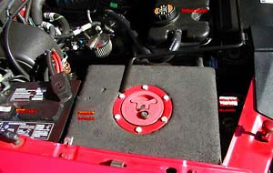A final option to install the Johnny Lightning's "Powercooler" pictured below. The Powercooler allows the use of ice water at the drag strip. The intercooler fluid flows through coils in the Powercooler. Of course, the ice melts quickly, so this is not useful for anything other than drag racing.
At $375 versus less than $150 for two intercooler fans, however, the Powercooler may be more cost-effective for drag racers (most report a .1-.2 improvement in ET's) than road racers. BABolt reported an increase of only 10 rwHP and 15 lbs. ft. adding the Powercooler, but the cooler charge air may also allow for more boost or more timing on the same octane fuel. The Powercooler requires the relocation of either the battery or the windshield washer reservoir. Details here. |
||||||||||||||||||||||||||||||||||||||||||||||||||
|
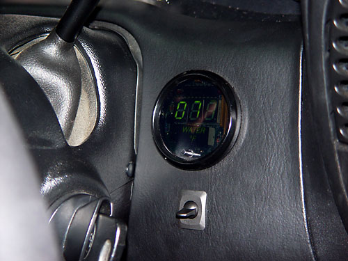To monitor the intercooler temps, I
installed a Nordskog digital water temp gauge. It reads down to
0�, making it one of the few gauges that will read low enough for
intercooler fluid use.
It's actually completely black -- the flash was strong enough to make the smoked plastic cover look transparent. The switch used to change senders (see below). |
||||||||||||||||||||||||||||||||||||||||||||||||||
| 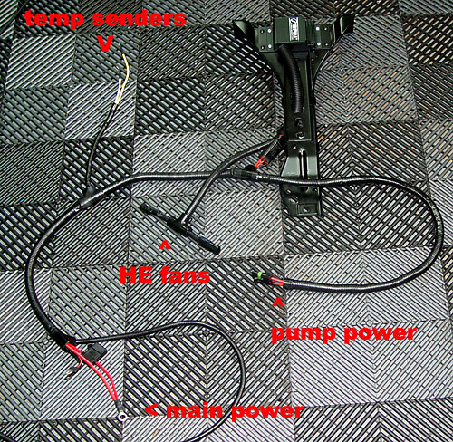Here is the completed harness for my intercooler control setup. Note that I moved the SPAL controller from the hood latch support (long story), and added a SPAL sender for the fan controller, so the harness was later redone. | ||||||||||||||||||||||||||||||||||||||||||||||||||
|
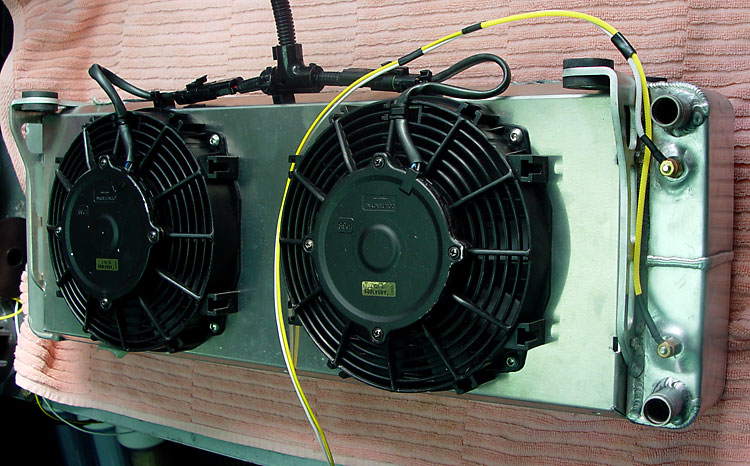 This shot shows the sender wires before I made a harness for them. One bottom one measures the fluid going in, and the top one measures the fluid going out. The theory was that it would enable me to measure the drop across the HE. What I failed to consider is that the temperature pulldown is not enough to register much of a delta on each pass. Write this up as a waste of time. One sender is plenty.
|
||||||||||||||||||||||||||||||||||||||||||||||||||